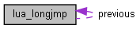

Lua_Docmention
1.0
成员变量
lua_longjmp结构体 参考
lua_longjmp 的协作图:

[
图例
]
成员变量
struct
lua_longjmp
*
previous
luai_jmpbuf
b
volatile int
status
详细描述
在文件
ldo.c
第
84
行定义.
结构体成员变量说明
◆
b
luai_jmpbuf
b
在文件
ldo.c
第
86
行定义.
◆
previous
struct
lua_longjmp
* previous
在文件
ldo.c
第
85
行定义.
◆
status
volatile int status
在文件
ldo.c
第
87
行定义.
该结构体的文档由以下文件生成:
C:/Users/longyg/Documents/gitprojects/lua/src/
ldo.c
制作者
1.8.20